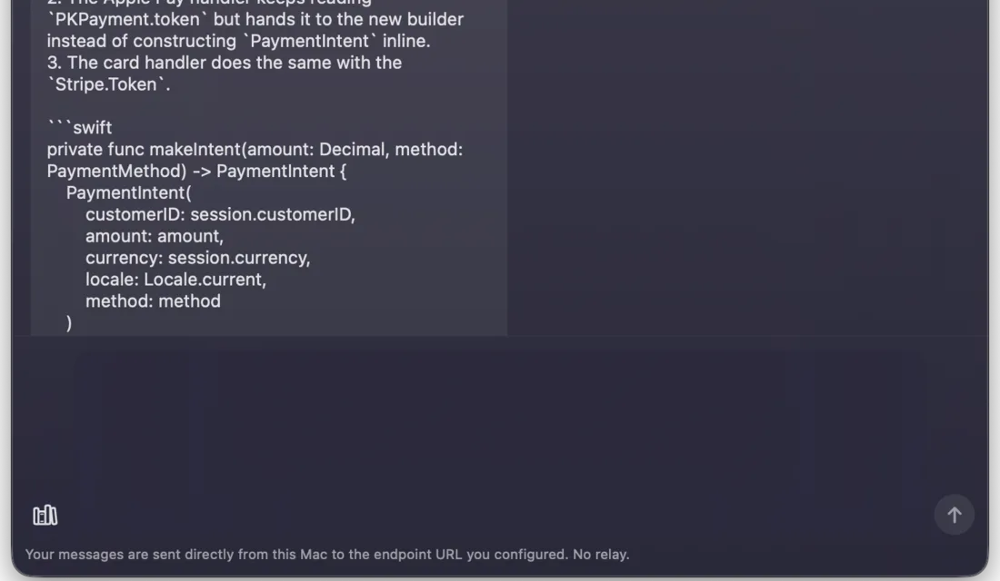
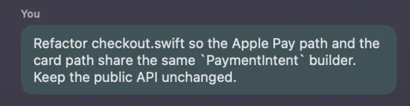
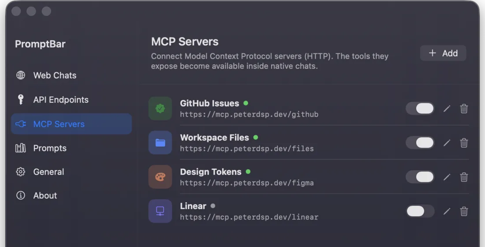
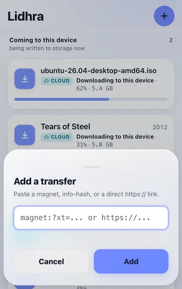

Your own endpoint
Point it at any OpenAI-compatible /chat/completions service, hosted or on localhost. Replies stream straight from your Mac, with no relay.


A Mac menu bar app that ships empty. Add the web chats you use, or your own API endpoint, and open it with ⌥⌘O.
Example
https://chat.example.com
Type any address and it becomes a pill in your bar. It runs in WKWebView, so you stay signed in and the cookies stay on this Mac.
Point it at any OpenAI-compatible /chat/completions service, hosted or on localhost. Replies stream straight from your Mac, with no relay.

Save a prompt once, tag it, and drop it into whichever chat is open. Search finds it by title or tag.

Connect HTTP MCP servers and switch each one on or off. Native chats can then call the tools you trust.

It lives in the menu bar only. ⌥⌘O opens it, a click elsewhere hides it, and your keys stay in the macOS Keychain.
One purchase, no subscription, activated with your Ko-fi email. On the App Store it is $9.99, with Family Sharing and store updates.
Any chat that runs in a browser tab. Paste its address, give it a name and a colour. PromptBar ships with none, so you choose.
Yes. Add any OpenAI-compatible endpoint, hosted or on your own machine, such as localhost:11434. The key goes to the macOS Keychain.
Only your messages, sent straight to the address you set. There is no account, no analytics, no telemetry and no relay.
macOS 26 Tahoe or later, on Apple silicon or Intel. Builds are signed and notarised.
The same app. Ko-fi (€8.99) unlocks the direct build and it updates from GitHub. The App Store ($9.99) handles updates and Family Sharing. The GitHub trial is free.
Paste a magnet or a link and Lidhra fetches it through Real-Debrid, AllDebrid, TorBox or six other services, then downloads it natively and resumes where it stopped. Finished files wait in a library, ready to play or cast to a TV.
Lidhra for iPhone, iPad, Mac, Apple TV and Vision Pro
One purchase, no subscription.

